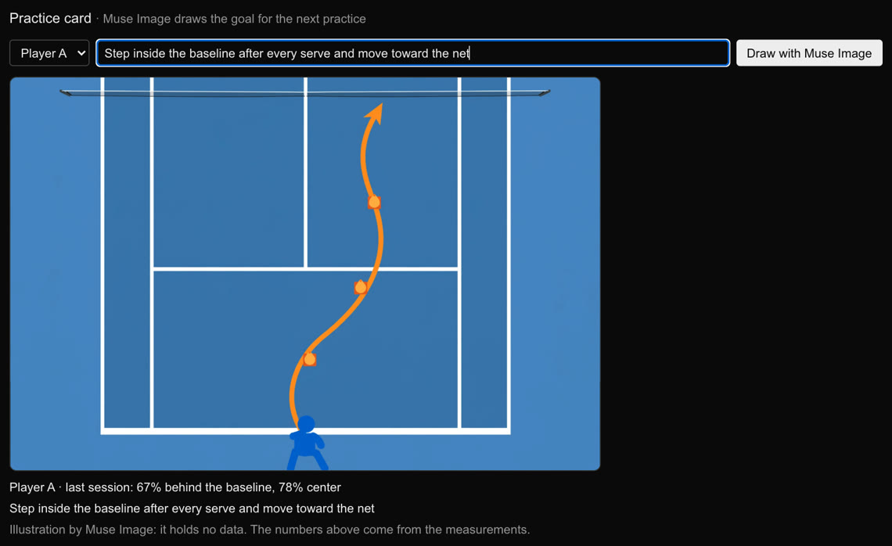

Meta Global AI Developer Hackathon · Indie Developer श्रेणी
एक कैमरा।
असली मूवमेंट डेटा।
CourtSense किसी टेनिस कोच के साधारण ट्रेनिंग वीडियो से हर खिलाड़ी की दूरी, रफ़्तार, कोर्ट पर स्थिति और हीटमैप निकालता है। Meta SAM 3.1 खिलाड़ियों को ट्रैक करता है, और एक Muse Spark एजेंट कोच के सवालों का जवाब देता है और अपने दिए हर नंबर की जाँच करता है।

समस्या
कोच हर प्रैक्टिस फ़िल्माते हैं। फिर वे सिर्फ़ उसे देख पाते हैं।
कोई खिलाड़ी कितना दौड़ा, कितनी तेज़ी से और कहाँ खड़ा रहा, यह जानने के लिए आमतौर पर ऐसे ट्रैकिंग सिस्टम चाहिए होते हैं जो ज़्यादातर क्लबों की पहुँच से बाहर हैं। हमारे कोच के पास बेसलाइन के पीछे सिर्फ़ एक कैमरा है। CourtSense ठीक उसी के साथ काम करता है।
यह कैसे काम करता है
कोच के वीडियो से मीटर में कोर्ट तक
-
1
सेशन अपलोड करें
कोच वीडियो का वह हिस्सा चुनते हैं जिसका विश्लेषण करना है। SAM 3.1 का एक स्ट्रीमिंग अनुरोध दोनों खिलाड़ियों को ढूँढता है और हर फ़्रेम में ट्रैक करता है। 12 मिनट का सेशन 10,688 फ़्रेम का होता है और इसकी लागत लगभग $2.14 है।

-
2
कोर्ट के चार बिंदुओं पर क्लिक करें
जहाँ सिंगल्स लाइनें मिलती हैं, वहाँ चार क्लिक एक होमोग्राफ़ी तय करते हैं। इसके बाद हर कदम कोर्ट पर मीटर में एक स्थिति है, जो पास वाली बेसलाइन के बीच से मापी जाती है (सिंगल्स कोर्ट 8.23 m चौड़ा और 23.77 m लंबा है)।

-
3
नंबर पढ़ें
दूरी, औसत और अधिकतम रफ़्तार, बेसलाइन के पीछे, बेसलाइन पर, मिड-कोर्ट में और नेट पर बिताया समय, बाएँ/बीच/दाएँ का बँटवारा, और हर खिलाड़ी का हीटमैप। जब कोई माप अनुमानित हो, तो मान सटीक दिखने के बजाय ~ से चिह्नित होता है, और ज़ोन के हिस्से एक रेंज के साथ आते हैं।


-
4
कोच असिस्टेंट से पूछें
एक Muse Spark एजेंट अपने टूल खुद चुनता है, वीडियो को उस पल पर ले जाता है जिसकी वह बात कर रहा है, और उस क्लिप को खुद देख सकता है। कोच सवाल टाइप कर सकते हैं या बोलकर पूछ सकते हैं। जवाब का हर नंबर कोच के देखने से पहले डेटा से मिलाया जाता है, और कोच रिपोर्ट का हर नंबर भी।

-
5
रिपोर्ट पाएँ
हर सेशन के बाद Muse Spark सिर्फ़ मापे गए नंबरों से एक छोटी रिपोर्ट लिखता है, अंग्रेज़ी में या हमारे कोच की भाषा तुर्की में।

-
6
प्रैक्टिस कार्ड बनाएँ
कोच अगली प्रैक्टिस का लक्ष्य लिखते हैं, और Muse Image उसे ऊपर से दिखते कोर्ट पर एक ड्रिल के रूप में बनाता है, उस जगह से शुरू करके जहाँ खिलाड़ी सबसे ज़्यादा खड़ा रहा। तस्वीर में कोई नंबर नहीं होता; नंबर माप से आते हैं और कैप्शन में रहते हैं।

एक असली सेशन
CourtSense ने क्या मापा
हमारे कोच के ट्रेनिंग सेशन से। कैमरा नीचा होने से नेट दूर वाले खिलाड़ी के पैरों को छिपा देता है, इसलिए उसके नंबर अनुमानित के रूप में चिह्नित रहते हैं, रेंज के साथ। त्रुटियाँ हाथ से चिह्नित पैरों के मुकाबले मापी गई हैं। विवरण रिपॉज़िटरी में है।
कोच असिस्टेंट के अंदर
यह अपना काम दिखाता है, और नंबर गढ़ नहीं सकता
Where did Player A run fastest? Show me that moment and describe what happens.
- Looking for moments: fastest moments (Player A)
- Jumping the video to 6:44
- ▶ 6:44 · Player A fastest run
- Watching 5 s from 6:44
- Reading the metrics (Player A)
- Checking the answer
Player A's fastest 1-s run was at 6:44 at 3.81 m/s.
✓ Verified · 5 steps · ~$0.019
ऐप में रिकॉर्ड किया गया एक असली रन। एजेंट हर बारी में एक टूल इस्तेमाल करता है, ज़्यादा से ज़्यादा आठ बारी तक:
get_metricsहर खिलाड़ी के सेशन मेट्रिक्स, भरोसे के नोट्स के साथfind_momentsसबसे तेज़ दौड़, सबसे लंबी दौड़ और नेट पर जाना, वीडियो के समय मेंminute_breakdownप्रति मिनट मीटरshow_momentकोच के वीडियो को किसी समय पर ले जाता हैlook_at_clip2–8 सेकंड काटकर Muse Spark से पूछता है कि क्या हो रहा हैanswerअंतिम जवाब: हर नंबर एक दावे के रूप में दर्ज होता है और सेशन के डेटा से जाँचा जाता है, वरना जवाब मॉडल के पास वापस जाता है
अंदर है Meta AI
यहाँ हर Meta मॉडल क्या करता है
| Meta मॉडल या पैकेज | CourtSense में यह क्या करता है |
|---|---|
| SAM 3.1 | टेक्स्ट प्रॉम्प्ट "tennis player" से सेशन के हर फ़्रेम में दोनों खिलाड़ियों को ढूँढता और ट्रैक करता है, Meta Model API के ज़रिए एक स्ट्रीमिंग अनुरोध में। |
| Muse Spark 1.3 | कोच असिस्टेंट चलाता है: अपने टूल चुनता है, वीडियो इनपुट से छोटी क्लिप देखता है, अंग्रेज़ी या तुर्की में जवाब देता है। कोच रिपोर्ट भी लिखता है। |
| Muse Voice Transcribe | कोच को असिस्टेंट से अंग्रेज़ी या तुर्की में बोलकर पूछने देता है। शब्द सवाल वाले बॉक्स में आ जाते हैं, ताकि पूछने से पहले जाँचे जा सकें। |
| Muse Image | कोच के अगली प्रैक्टिस के लक्ष्य को ऊपर से दिखते ड्रिल कार्ड के रूप में बनाता है। तस्वीर में कोई नंबर नहीं होता; कैप्शन के नंबर माप से आते हैं। |
@meta-sam/parser | SAM 3.1 के स्ट्रीमिंग आउटपुट को हर फ़्रेम के बॉक्स और मास्क में पढ़ता है। |
@meta-sam/react, @meta-sam/graphics | ब्राउज़र में सेशन चलाते हैं, हर खिलाड़ी का मास्क उसके रंग में बनाकर। |
एक असली कोच के लिए बनाया गया
हमारे कोच के अपने सेशनों से बनाया गया
मैं हमारी सारी प्रैक्टिस फ़िल्माता हूँ, लेकिन अब तक मैं उन्हें सिर्फ़ देख पाता था। CourtSense से मैं नंबरों में देखता हूँ कि कोई खिलाड़ी कितना दौड़ता है और कोर्ट पर कहाँ खड़ा रहता है। अब से मैं अपने सेशन इसी डेटा के आधार पर प्लान करूँगा।
हमारे कोच, एक वॉइस नोट में (तुर्की से अनुवादित)। सेशन हमारे कोच ने फ़िल्माया, दोनों खिलाड़ियों की सहमति से।
कोई आम स्पोर्ट्स एनालाइज़र नहीं।यह हमारे अपने कोच के लिए बना है, और इसके केंद्र में SAM 3.1 है।
ईमानदार सीमाएँ
यह अभी क्या नहीं करता
गेंद की ट्रैकिंग नहीं
हमारी फ़ुटेज में SAM 3.1 ने छत की लाइटों और साइनबोर्ड को गेंद समझ लिया, इसलिए अभी शॉट या स्कोर के आँकड़े नहीं हैं।
दूर की तरफ़ अनुमानित गहराई
कैमरा नीचा होने पर दूर वाले खिलाड़ी की आगे-पीछे की स्थिति अनुमानित है: हाथ से चिह्नित फ़्रेमों पर लगभग 1 m की त्रुटि। ऐप इसे चिह्नित करता है और अंदाज़ा लगाने के बजाय ज़ोन की रेंज देता है। बाएँ और दाएँ की जानकारी भरोसेमंद रहती है।
कैमरा का खिसकना
लंबे सेशन में कैमरे के जिम्बल का धीमा खिसकना अभी ठीक नहीं किया जाता।